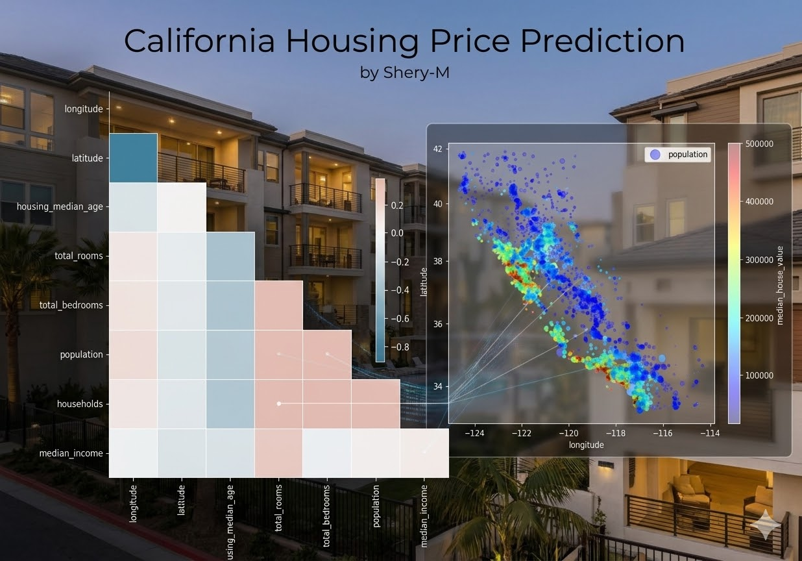
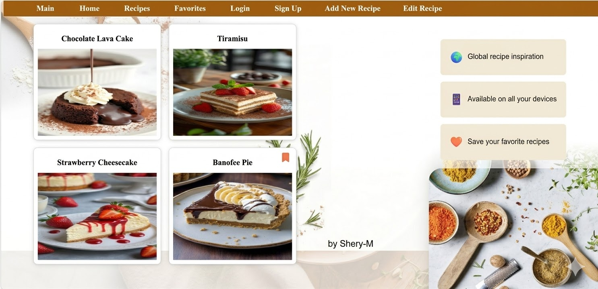

Turning data into clear insights to help businesses make desicion
Contact MeJunior AI & Data Science Enthusiast with a strong focus on machine learning and data-driven problem solving. I am currently advancing my expertise through the Digital Egypt Pioneers Initiative (DEPI), where I work on practical, real-world projects that strengthen my analytical and technical skills. I analyze datasets to uncover patterns, extract meaningful insights, and build clear visualizations that support smarter business decisions. My experience includes data cleaning, exploratory data analysis, feature engineering, and applying basic machine learning models to solve business-oriented problems. I am passionate about transforming raw data into actionable intelligence, designing data-driven solutions, and continuously developing my skills in AI and Machine Learning to create measurable impact.
Bachelor in Computer Science
Faculty of Computers & AI
2023-2027 [Expected]
Data Science & AI Projects
Worked on real-world projects analyzing datasets, extracting insights, and building visualizations to support business decisions.

A machine learning project that predicts housing prices in California using regression models. It includes preprocessing, feature engineering, and model evaluation.

Dynamic website with filtering and localStorage functionality.
Have a dataset, an idea, or a business challenge ? Let's work together to transform it into actionable insights.
I’m just one message away.